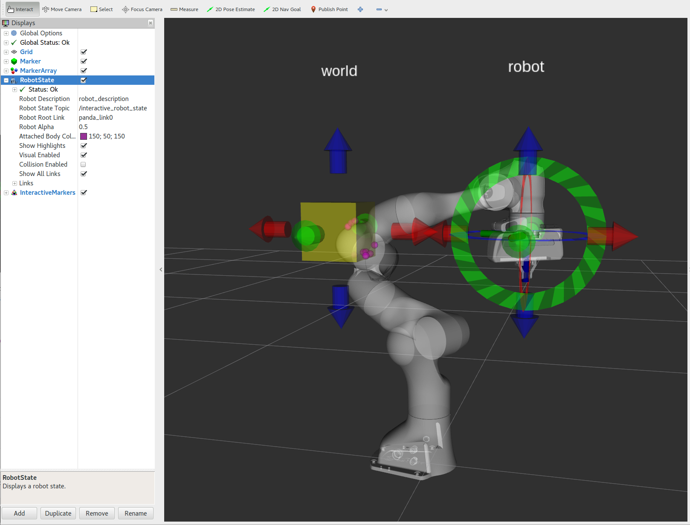
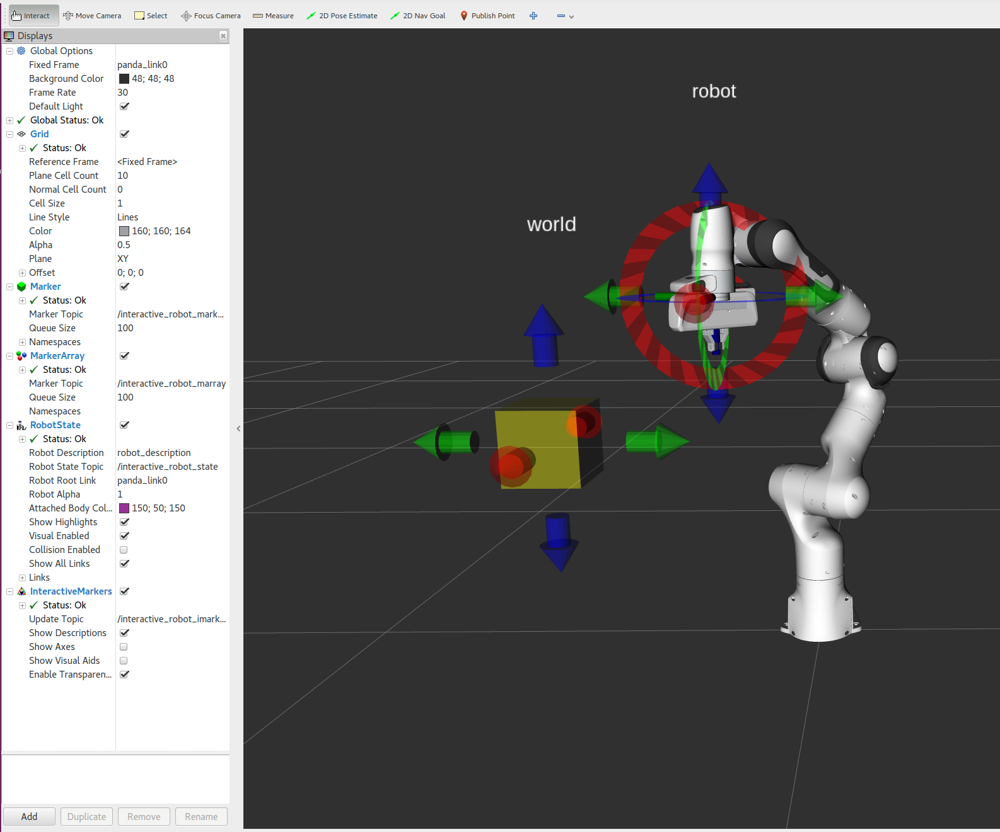

Visualizing Collisions
{kind=link}
This section walks you through C++ example code that allows you to visualize collision contact points between the robot, itself, and the world as you move and interact with the robot’s arm in RViz.
Getting Started
If you haven’t already done so, make sure you’ve completed the steps in Getting Started.
Running the Code
Roslaunch the launch file to run the code directly from moveit_tutorials:
roslaunch moveit_tutorials visualizing_collisions_tutorial.launch
You should now see the Panda robot with 2 interactive markers which you can drag around.
{kind=link}
Classes
The code for this tutorial is mainly in the InteractiveRobot class which we will walk through below. The InteractiveRobot class maintains a RobotModel, a RobotState, and information about ‘the world’ (in this case “the world” is a single yellow cube).
The InteractiveRobot class uses the IMarker class which maintains an interactive marker. This tutorial does not cover the implementation of the IMarker class (imarker.cpp), but most of the code is copied from the basic_controls tutorial and you can read more there about interactive markers if you are interested.
Interacting
In RViz you will see two sets of Red/Green/Blue interactive marker arrows. Drag these around with the mouse. Move the right arm so it is in contact with the left arm. You will see magenta spheres marking the contact points. If you do not see the magenta spheres be sure that you added the MarkerArray display with interactive_robot_marray topic as described above. Also be sure to set RobotAlpha to 0.3 (or some other value less than 1) so the robot is transparent and the spheres can be seen. Move the right arm so it is in contact with the yellow cube (you may also move the yellow cube). You will see magenta spheres marking the contact points.
Relevant Code
The entire code can be seen here in the moveit_tutorials GitHub project. Libraries used can be found here. A lot of information necessary for understanding how this demo works is left out to keep this tutorial focused on collision contacts. To understand this demo fully, it is highly recommended that you read through the source code.
Initializing the Planning Scene and Markers
For this tutorial we use an InteractiveRobot object as a wrapper that combines a robot_model with the cube and an interactive marker. We also create a PlanningScene for collision checking. If you haven’t already gone through the planning scene tutorial, you go through that first.
InteractiveRobot robot;
/* Create a PlanningScene */
g_planning_scene = new planning_scene::PlanningScene(robot.robotModel());
Adding geometry to the PlanningScene
Eigen::Isometry3d world_cube_pose;
double world_cube_size;
robot.getWorldGeometry(world_cube_pose, world_cube_size);
g_world_cube_shape.reset(new shapes::Box(world_cube_size, world_cube_size, world_cube_size));
g_planning_scene->getWorldNonConst()->addToObject("world_cube", g_world_cube_shape, world_cube_pose);
Collision Requests
We will create a collision request for the Panda robot
collision_detection::CollisionRequest c_req;
collision_detection::CollisionResult c_res;
c_req.group_name = robot.getGroupName();
c_req.contacts = true;
c_req.max_contacts = 100;
c_req.max_contacts_per_pair = 5;
c_req.verbose = false;
Checking for Collisions
We check for collisions between robot and itself or the world.
g_planning_scene->checkCollision(c_req, c_res, *robot.robotState());
Displaying Collision Contact Points
If there are collisions, we get the contact points and display them as markers. getCollisionMarkersFromContacts() is a helper function that adds the collision contact points into a MarkerArray message. If you want to use the contact points for something other than displaying them you can iterate through c_res.contacts which is a std::map of contact points. Look at the implementation of getCollisionMarkersFromContacts() in collision_tools.cpp for how.
if (c_res.collision)
{
ROS_INFO("COLLIDING contact_point_count=%d", (int)c_res.contact_count);
if (c_res.contact_count > 0)
{
std_msgs::ColorRGBA color;
color.r = 1.0;
color.g = 0.0;
color.b = 1.0;
color.a = 0.5;
visualization_msgs::MarkerArray markers;
/* Get the contact points and display them as markers */
collision_detection::getCollisionMarkersFromContacts(markers, "panda_link0", c_res.contacts, color,
ros::Duration(), // remain until deleted
0.01); // radius
publishMarkers(markers);
}
}